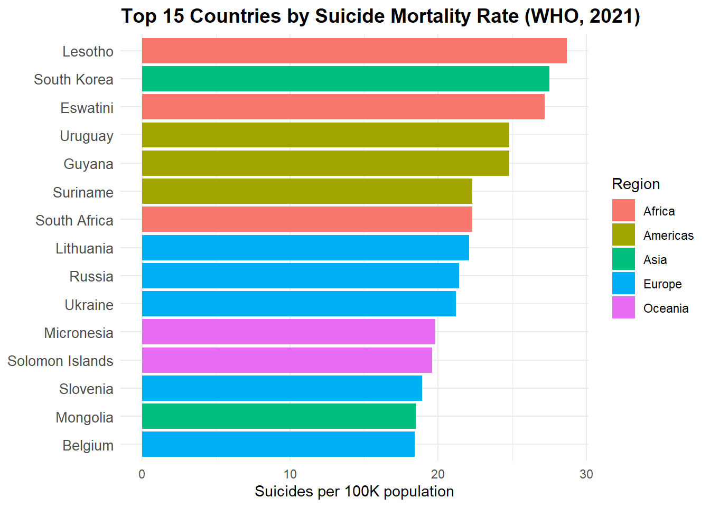
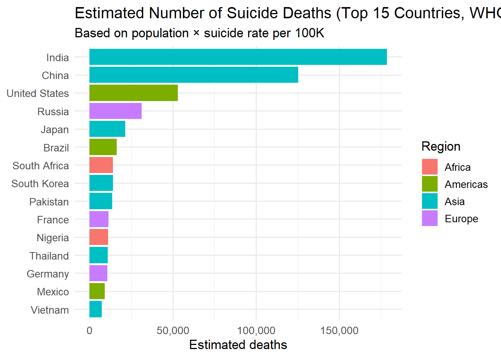
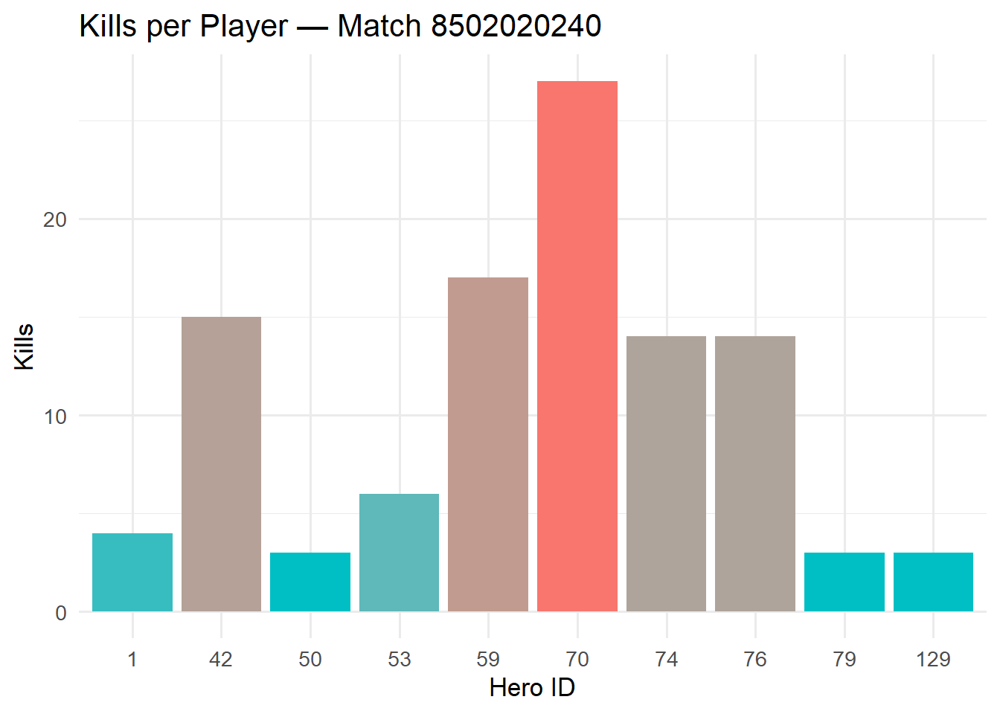
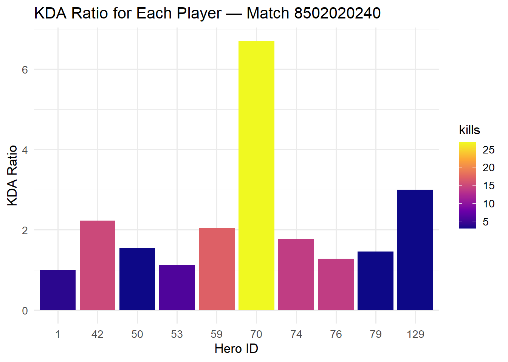

Коротко - тут я випробовував різні штуки з бібліотек httr2 і rvest
Частина №1 - соціальне дослідження того в які країни краще їхати працювати психологом і бопомагати людям з суіцидальними поривами
Частина №2 - дослідження того, які дані я зможу отримати про гру яку нещодавно сам же і зіграв через ресурс перегляду статистики матчів за допомогою API.
1.1 Бермо свою першу табличку з вікіпедії про коефіціент самогубств на 100 тис. населення і нормуємо її прибираючи перший ряд некоректних заголовків.
1.2 Нижче будуть виведені шматки коду які я перепробував і приходив до dead-end-у кожен раз. Тому те що ви бачите зараз - результат багатьох спроб.
ЛЮДЯМ З ВЕЛИКИМ СТАЖЕМ І/АБО СЛАБКИМИ НЕРВАМИ НЕ ДИВИТИСЯ
Code
# url <- "https://uk.wikipedia.org/wiki/%D0%A1%D0%BF%D0%B8%D1%81%D0%BE%D0%BA_%D0%BA%D1%80%D0%B0%D1%97%D0%BD_%D0%B7%D0%B0_%D0%BD%D0%B0%D1%81%D0%B5%D0%BB%D0%B5%D0%BD%D0%BD%D1%8F%D0%BC"# m100 <- read_html(url)# tables <- m100 |> html_elements("table")# length(tables) # to see how many tables exist# pre_iaaf <- tables[[3]]# pre_iaaf_df <- pre_iaaf |> html_table(fill = TRUE)# head(pre_iaaf_df)# # тут вономені виводить непотрібні 2 рядки спочатку, і я їх хочу позбавитися через непотрібність і # # через те що вони псують заголовки моїх стовбців# # pre_iaaf_df_clean <- pre_iaaf_df[-c(1,2), ]# names(pre_iaaf_df_clean) <- c(# "Місце", "Країна", "2006", "2009", "2012", "2015", "2021", "Щільність"# )# pre_iaaf_df_clean <- pre_iaaf_df_clean |># mutate(across(# c("2006", "2009", "2012", "2015", "2021", "Щільність"),# ~str_replace_all(., "[^0-9]", "") |> as.numeric()# ))# pre_iaaf_df$`2006`[1:10]# pre_iaaf_df_clean <- pre_iaaf_df_clean |># mutate(across(# c("2006", "2009", "2012", "2015", "2021", "Щільність"),# ~ . |># str_replace_all("[[:space:]]", "") |># str_replace_all("[^0-9]", "") |> # na_if("") |> # as.numeric()# ))# # length(pre_iaf)# pre_iaaf_df_clean# # clean_numeric_columns <- function(df) {# df |> # mutate(across(# -c(Країна),# ~ .x |># str_replace_all("[^0-9]", "") |> # все, крім цифр# as.ineger() # в число# ))# }# pre_iaaf_df_clean <- clean_numeric_columns(pre_iaaf_df_clean)# pre_iaaf_df_clean# Одна з робочих версій, однак мав відкинути її черз приколизтим що в результаті воно виводило ліст()# url <- "https://en.wikipedia.org/wiki/List_of_countries_by_suicide_rate"# m100 <- read_html(url)# pre_iaf <- m100 |> # html_elements(".wikitable sortable static-row-numbers sticky-header-multi sort-under-center col1left jquery-tablesorter") |> # html_elements("tbody") |> # html_table()# pre_iaf# url <- "https://en.wikipedia.org/wiki/List_of_countries_by_suicide_rate"# page1 <- read_html(url)# # suicide_df <- page1 |># html_elements("table.wikitable") |># html_children() |># html_table(fill = TRUE)# suicide_df# suicide_df <- suicide_df[2]# length(suicide_df)# suicide_df <- suicide_df[0:1]# suicide_df# # suicide_df <- suicide_df[1:length(suicide_df)]# # suicide_df# colnames(suicide_df[[1]]) <- c("Location", "Region", "All", "Male", "Female", "M/F")# suicide_df# suicide_clean <- suicide_df |># clean_names() |># mutate(across(# c(all, male, female, mf),# ~ str_replace_all(., "[^0-9.]", "") |> na_if("") |> as.numeric()# )) |># filter(!is.na(country) & country != "" & !country %in% c("World", "—"))# suicide_clean
1.3 Проміжна таблиця яка презентує нам країни з найбільшою кількістю самогубств на 100 тис. населення
Code
suicide_clean |>slice_max(All, n =15) |>ggplot(aes(x =reorder(Location, All), y = All, fill = Region)) +geom_col() +coord_flip() +labs(title ="Top 15 Countries by Suicide Mortality Rate (WHO, 2021)",y ="Suicides per 100K population",x =NULL ) +theme_minimal() +theme(plot.title =element_text(size =14, face ="bold"),axis.text.y =element_text(size =10) )

1.4 Етап №2 - беремо до уваги не лише значення на 100 тис. осіб, але і фактичне значення людей, адже великий відсоток самогубств в малій країні -> менше клієнтів, аніж якби їх було багато з такою ж самою щільністю
1.5 Після того як ми почистили наш датасет від непотрібних колонок ми можемо об’єднити наші таблички в одну і вже за простою формулою порахувати реальну кількість випадків.
1.7 Ну і отримуємо нашу візуалізацію того, куди краще їхати на роботу і яку мову вчити, також важливо робити поправки на реалістичність ситуації, те що вони чудово корелюють на графіку ще не означає що це єдиний фактор впливу на такі випадки.

2 Частина №2 - дослидження корисності людей які зіграли з вами нещодавно в гру
2.1 Перщопочатково ідея була взагалі інша - я хотів з сайту FRED взяти датасет по країнам і дослідити інфлаяцію за той рік, однак проблема буловтому, що підходящого датасету там не знайшлося, а дані бралися незрозуміло звідки, тому через брак часу і небажання шукати стовідсотково підходящий варіант, ця ідея була відкинута
2.2 По самій роботі з АPI сервісами, не до кінця все було зрозуміло,особливо з нетиповими випадками в яких розібратися було іноді складно. Тут, на щастя, не потребувався АРІ ключ, але була така можливість, однак з умовою оплати за використання даних.
Code
# Steam or OpenDota account IDgames_id <-8502020240# Your game ID player_id <-1515008780# Your player ID req1 <-request(paste0("https://api.opendota.com/api/matches/", games_id))req <-request(paste0("https://api.opendota.com/api/players/", player_id))resp1 <-req_perform(req1)resp <-req_perform(req)game_data <-resp_body_json(resp1, simplifyVector =TRUE)player_data <-resp_body_json(resp, simplifyVector =TRUE)game_data_df <- game_data$playersgame_data_df
Code
game_data_df[sapply(game_data_df, is.null)] <-NA
2.3 Тут ми можемо спостерігати перший результат аналізу нових даних, я для цікавості вирішив взяти на обробку одну з своїх недавніх ігор, однак не все на графіку буде зрозуміло - пізніше поясню чому.

2.4 І інший графік - розрахунок коефіціенту користності за одну гру.

2.5 Настав час пояснень того що це за циферки і де букви. Cправа в тому що на даний момент існує 2 варіанти того як можна доповнити дані - використовуючи датасети які вже є опубліковані, однак не оновлені за довгий час, через що зустрічаються такі артефакти як виведення предмету який найчастіше купили в грі - а виявляється що предмет з таким айді давно не існує і його замінив інший предмет. І таких випадків безліч, тому єдиний правильний варіант розвитку подій на даний момент, це власноруч прописата всім героям відповідні айді, характеристики, скіли, пасивні навички, і все теж саме для предметів, що зрозуміло, займе час.
Source Code
---title: "Exploring Data: From Web Scraping to OpenDota API"author: "Mykola Utkin"number-sections: trueformat: html: # toc: true # toc-depth: 2 # toc-title: "Зміст" # toc-location: right # idea from https://quarto.org/docs/output-formats/html-code.html number-sections: true code-fold: true code-tools: true df-print: paged highlight-style: atom-one-lighteditor_options: chunk_output_type: console---# Про що ця робота:Коротко - тут я випробовував різні штуки з бібліотек **httr2** і **rvest** **Частина №1** - соціальне дослідження того в які країни краще їхати працювати психологом і бопомагати людям з суіцидальними поривами**Частина №2** - дослідження того, які дані я зможу отримати про гру яку нещодавно сам же і зіграв через ресурс перегляду статистики матчів за допомогою API.```{r}#| include: FALSE.libPaths(c(file.path("D:", "R-4.5.1", "library"), .libPaths()))library(tidyverse)library(pacman)library(scales)library(ggplot2)pacman::p_load( tidyverse, rvest, janitor, ggrepel, jsonlite, httr2, dplyr)```## Бермо свою першу табличку з вікіпедії про коефіціент самогубств на 100 тис. населення і нормуємо її прибираючи перший ряд некоректних заголовків.```{r}url <-"https://en.wikipedia.org/wiki/List_of_countries_by_suicide_rate"page1 <-read_html(url)suicide_list <- page1 |>html_elements("table.wikitable") |>html_table(fill =TRUE)suicide_df <- suicide_list[[1]]suicide_df <- suicide_df[-1, ]colnames(suicide_df) <-c("Location", "Region", "All", "Male", "Female", "M/F")```## Нижче будуть виведені шматки коду які я перепробував і приходив до dead-end-у кожен раз. Тому те що ви бачите зараз - результат **багатьох** спроб. **ЛЮДЯМ З ВЕЛИКИМ СТАЖЕМ І/АБО СЛАБКИМИ НЕРВАМИ НЕ ДИВИТИСЯ**```{r}#| eval: FALSE# url <- "https://uk.wikipedia.org/wiki/%D0%A1%D0%BF%D0%B8%D1%81%D0%BE%D0%BA_%D0%BA%D1%80%D0%B0%D1%97%D0%BD_%D0%B7%D0%B0_%D0%BD%D0%B0%D1%81%D0%B5%D0%BB%D0%B5%D0%BD%D0%BD%D1%8F%D0%BC"# m100 <- read_html(url)# tables <- m100 |> html_elements("table")# length(tables) # to see how many tables exist# pre_iaaf <- tables[[3]]# pre_iaaf_df <- pre_iaaf |> html_table(fill = TRUE)# head(pre_iaaf_df)# # тут вономені виводить непотрібні 2 рядки спочатку, і я їх хочу позбавитися через непотрібність і # # через те що вони псують заголовки моїх стовбців# # pre_iaaf_df_clean <- pre_iaaf_df[-c(1,2), ]# names(pre_iaaf_df_clean) <- c(# "Місце", "Країна", "2006", "2009", "2012", "2015", "2021", "Щільність"# )# pre_iaaf_df_clean <- pre_iaaf_df_clean |># mutate(across(# c("2006", "2009", "2012", "2015", "2021", "Щільність"),# ~str_replace_all(., "[^0-9]", "") |> as.numeric()# ))# pre_iaaf_df$`2006`[1:10]# pre_iaaf_df_clean <- pre_iaaf_df_clean |># mutate(across(# c("2006", "2009", "2012", "2015", "2021", "Щільність"),# ~ . |># str_replace_all("[[:space:]]", "") |># str_replace_all("[^0-9]", "") |> # na_if("") |> # as.numeric()# ))# # length(pre_iaf)# pre_iaaf_df_clean# # clean_numeric_columns <- function(df) {# df |> # mutate(across(# -c(Країна),# ~ .x |># str_replace_all("[^0-9]", "") |> # все, крім цифр# as.ineger() # в число# ))# }# pre_iaaf_df_clean <- clean_numeric_columns(pre_iaaf_df_clean)# pre_iaaf_df_clean# Одна з робочих версій, однак мав відкинути її черз приколизтим що в результаті воно виводило ліст()# url <- "https://en.wikipedia.org/wiki/List_of_countries_by_suicide_rate"# m100 <- read_html(url)# pre_iaf <- m100 |> # html_elements(".wikitable sortable static-row-numbers sticky-header-multi sort-under-center col1left jquery-tablesorter") |> # html_elements("tbody") |> # html_table()# pre_iaf# url <- "https://en.wikipedia.org/wiki/List_of_countries_by_suicide_rate"# page1 <- read_html(url)# # suicide_df <- page1 |># html_elements("table.wikitable") |># html_children() |># html_table(fill = TRUE)# suicide_df# suicide_df <- suicide_df[2]# length(suicide_df)# suicide_df <- suicide_df[0:1]# suicide_df# # suicide_df <- suicide_df[1:length(suicide_df)]# # suicide_df# colnames(suicide_df[[1]]) <- c("Location", "Region", "All", "Male", "Female", "M/F")# suicide_df# suicide_clean <- suicide_df |># clean_names() |># mutate(across(# c(all, male, female, mf),# ~ str_replace_all(., "[^0-9.]", "") |> na_if("") |> as.numeric()# )) |># filter(!is.na(country) & country != "" & !country %in% c("World", "—"))# suicide_clean``````{r}#| include: FALSEurl <-"https://en.wikipedia.org/wiki/List_of_countries_by_suicide_rate"page1 <-read_html(url)suicide_list <- page1 |>html_elements("table.wikitable") |>html_table(fill =TRUE)suicide_df <- suicide_list[[1]]suicide_df <- suicide_df[-1, ]colnames(suicide_df) <-c("Location", "Region", "All", "Male", "Female", "M/F")suicide_clean <- suicide_df |>mutate(across(c(All, Male, Female, `M/F`),~str_replace_all(., "[^0-9.]", "") |>na_if("") |>as.numeric() )) |>filter(Location !="World", !is.na(All))head(suicide_clean)```## Проміжна таблиця яка презентує нам країни з найбільшою кількістю самогубств на 100 тис. населення```{r}suicide_clean |>slice_max(All, n =15) |>ggplot(aes(x =reorder(Location, All), y = All, fill = Region)) +geom_col() +coord_flip() +labs(title ="Top 15 Countries by Suicide Mortality Rate (WHO, 2021)",y ="Suicides per 100K population",x =NULL ) +theme_minimal() +theme(plot.title =element_text(size =14, face ="bold"),axis.text.y =element_text(size =10) )```## Етап №2 - беремо до уваги не лише значення на 100 тис. осіб, але і фактичне значення людей, адже великий відсоток самогубств в малій країні -> менше клієнтів, аніж якби їх було багато з такою ж самою щільністю ```{r}url <-"https://en.wikipedia.org/wiki/List_of_countries_and_dependencies_by_population"page2 <-read_html(url)page2dell <- page2 |>html_elements("table.wikitable") |>html_children() |>html_table(fill =TRUE)dell <- dell[[2]]dell <- dell |>select(-"% ofworld", -"Date", -"Source (official or fromthe United Nations)", -"Notes")dell |>head()```## Після того як ми почистили наш датасет від непотрібних колонок ми можемо об'єднити наші таблички в одну і вже за простою формулою порахувати **реальну** кількість випадків.```{r}data_inner =merge(dell, suicide_clean,by="Location",all=TRUE)data_inner <- data_inner |> janitor::clean_names()# data_inner <- data_inner |># mutate(location = reorder(location, all))data_inner <- data_inner |>mutate(across(c(all, male, female, m_f), ~as.numeric(gsub(",", "", .x))),location =reorder(location, -all, FUN =function(x) ifelse(is.na(x), 0, x)) )levels(data_inner$location)[1:10]data_inner <- data_inner |>mutate(across(c(all, male, female, m_f), ~as.numeric(gsub(",", "", .x))) ) |>arrange(desc(all)) |>mutate(location =factor(location, levels =unique(location)))data_inner```## Простенькою формулою я обчислюю реальну кількість випадків і збираю в зручному форматі.```{r}data_inner <- data_inner |>mutate(population =as.numeric(gsub(",", "", population)),all =as.numeric(all),est_deaths = (all /100000) * population )top15_deaths <- data_inner |>filter(!is.na(est_deaths)) |>arrange(desc(est_deaths)) |>slice_head(n =15)```## Ну і отримуємо нашу візуалізацію того, куди краще їхати на роботу і яку мову вчити, також важливо робити поправки на реалістичність ситуації, те що вони чудово корелюють на графіку ще не означає що це єдиний фактор впливу на такі випадки.```{r}#| echo: FALSEggplot(top15_deaths, aes(x =reorder(location, est_deaths), y = est_deaths, fill = region)) +geom_col() +coord_flip() +scale_y_continuous(labels = scales::comma) +labs(title ="Estimated Number of Suicide Deaths (Top 15 Countries, WHO 2021)",subtitle ="Based on population × suicide rate per 100K",x =NULL,y ="Estimated deaths",fill ="Region" ) +theme_minimal(base_size =13)```# Частина №2 - дослидження **корисності** людей які зіграли з вами нещодавно в гру## Перщопочатково ідея була взагалі інша - я хотів з сайту FRED взяти датасет по країнам і дослідити інфлаяцію за той рік, однак проблема буловтому, що підходящого датасету там не знайшлося, а дані бралися незрозуміло звідки, тому через брак часу і небажання шукати стовідсотково підходящий варіант, ця ідея була відкинута## По самій роботі з АPI сервісами, не до кінця все було зрозуміло,особливо з нетиповими випадками в яких розібратися було іноді складно. Тут, на щастя, не потребувався АРІ ключ, але була така можливість, однак з умовою оплати за використання даних. ```{r}# Steam or OpenDota account IDgames_id <-8502020240# Your game ID player_id <-1515008780# Your player ID req1 <-request(paste0("https://api.opendota.com/api/matches/", games_id))req <-request(paste0("https://api.opendota.com/api/players/", player_id))resp1 <-req_perform(req1)resp <-req_perform(req)game_data <-resp_body_json(resp1, simplifyVector =TRUE)player_data <-resp_body_json(resp, simplifyVector =TRUE)game_data_df <- game_data$playersgame_data_dfgame_data_df[sapply(game_data_df, is.null)] <-NA```## Тут ми можемо спостерігати перший результат аналізу нових даних, я для цікавості вирішив взяти на обробку одну з своїх недавніх ігор, однак не все на графіку буде зрозуміло - пізніше поясню чому.```{r}#| echo: FALSEggplot(game_data_df, aes(x =factor(hero_id), y = kills, fill = kills)) +geom_col(show.legend =FALSE) +scale_fill_gradient(low ="#00BFC4", high ="#F8766D") +labs(title =paste("Kills per Player — Match", games_id),x ="Hero ID",y ="Kills" ) +theme_minimal(base_size =13)```## І інший графік - розрахунок коефіціенту **користності** за одну гру.```{r}#| echo: FALSEggplot(game_data_df, aes(x =factor(hero_id), y = ((kills +0.5* assists) /pmax(deaths, 1)), fill = kills)) +geom_col() +scale_fill_viridis_c(option ="plasma") +labs(title =paste("KDA Ratio for Each Player — Match", games_id),x ="Hero ID",y ="KDA Ratio" ) +theme_minimal(base_size =13)```## Настав час пояснень того що це за циферки і де букви. Cправа в тому що на даний момент існує 2 варіанти того як можна доповнити дані - використовуючи датасети які вже є опубліковані, однак не оновлені за довгий час, через що зустрічаються такі артефакти як виведення предмету який найчастіше купили в грі - а виявляється що предмет з таким айді давно не існує і його замінив інший предмет. І таких випадків безліч, тому **єдиний правильний** варіант розвитку подій на даний момент, це власноруч прописата всім героям відповідні айді, характеристики, скіли, пасивні навички, і все теж саме для предметів, що зрозуміло, займе час.